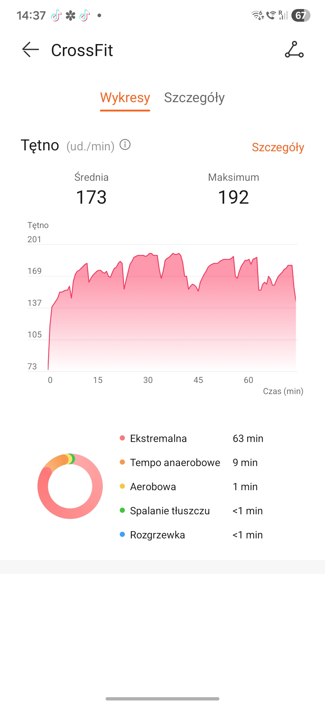

Nie więcej dni.
Więcej jakości bodźca.
Mój obecny model łączy dwie intensywne sesje siłowe, codzienny marsz i dużo czasu bez ciężarów. To osobista dokumentacja — nie plan do kopiowania bez dostosowania.
Trenuję wszystkie grupy mięśniowe.
W listopadzie 2026 zmieniłem dotychczasowy sposób treningu. Wszystkie grupy mięśniowe trenuję w ciągu dwóch kolejnych dni, po około dwie godziny intensywnej pracy. Wykonuję więcej ćwiczeń i korzystam z większych ciężarów niż we wcześniejszym planie.
Pozostałe dni tygodnia poświęcam regeneracji od wysiłku siłowego. Nie oznacza to jednak całkowitego bezruchu: dużo chodzę i wykonuję fizyczną pracę.
Dwa treningi, potem regeneracja siłowa
Około 2 godzin. Wszystkie grupy mięśniowe w ramach dwudniowego bloku.
Kolejny dzień, około 2 godzin. Kontynuacja pracy nad całym ciałem.
Kolejność ćwiczeń i rozdział grup między dniami nie zostały jeszcze szczegółowo rozpisane. Układ jest opisem, a nie instruktażem.
Siła i wydolność.
Własne pomiary i zgłoszone wyniki. Nie wszystkie wartości zostały niezależnie zweryfikowane.
Progres bez mnożenia dni na siłowni
Pomimo zmniejszenia liczby dni treningowych nadal zauważam postęp ciężarów i możliwości wysiłkowych. Jest to moja obserwacja, a nie dowód, że taki układ będzie optymalny dla każdego.
Regeneracja to nie tylko przerwa
Przy dużej intensywności warto obserwować trendy siły, sen, bóle stawów, zmęczenie i obciążenie związane z pracą fizyczną. Sam brak kontuzji nie gwarantuje, że obciążenie jest bezpieczne.
Dokumentacja wysiłku.
Na stronie są też wcześniejsze materiały z wysiłku wytrzymałościowego i pomiarów tętna.
